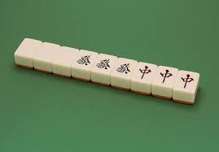
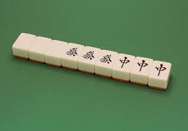
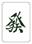
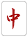

◆大三元とは
麻雀における役のひとつ。
白・發・中の3種類をすべて刻子または槓子にして和了した時に成立する。
役満。副露可。

麻雀における役のひとつ。
白・發・中の3種類をすべて刻子または槓子にして和了した時に成立する。
役満。副露可。

◆ルール
白は發に勝ち、發は中に勝ち、中は白に勝つ
東南戦の全８局、終局後に点数高いほうが勝ち。西入はなし
じゃんけんに勝つと相手から1,000点もらい、負けると相手に1,000点渡す
流局(=アイコ)の場合、局は進まず、次の点数は倍プッシュ
白は發に勝ち、發は中に勝ち、中は白に勝つ
東南戦の全８局、終局後に点数高いほうが勝ち。西入はなし
じゃんけんに勝つと相手から1,000点もらい、負けると相手に1,000点渡す
流局(=アイコ)の場合、局は進まず、次の点数は倍プッシュ
東一局
対面の点数：
点
対面の手配
自分の手配
自分の手配
次の点数：
点
自分の点数：
点
- 
- 